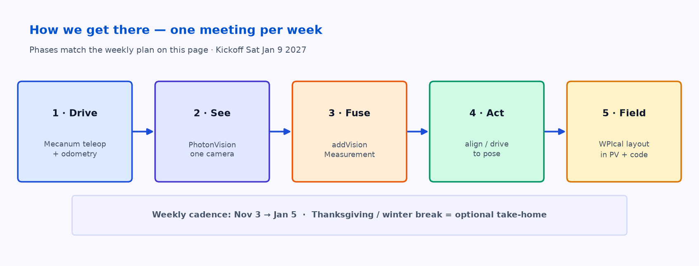
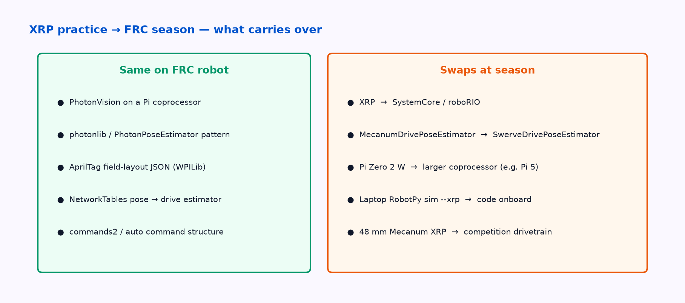

Draft, rewritten Nov 3 2026. One meeting per week. Combines the old roadmap and planning tracks into one page. Kickoff target: Sat Jan 9 2027.
Stack (locked for preseason)
| Layer | Choice |
|---|---|
| Robot | Mecanum XRP (48 mm wheels) — xrp.html |
| Vision | PhotonVision on Pi Zero 2 W + OV9281 — vision.html |
| Field | Custom AprilTag layout (WPIcal / practice JSON) |
| Code host | Laptop RobotPy sim --xrp + photonlibpy + MecanumDrivePoseEstimator |
Phases

- Drive — Mecanum XRP drives from the laptop; encoders + gyro into
MecanumDrivePoseEstimator. - See — PhotonVision detects tags; pose numbers reach the laptop over NetworkTables.
- Fuse — Vision measurements update the pose estimator; Field2d looks right.
- Act — Simple align-to-tag / drive-to-pose on the Mecanum XRP.
- Field — Practice-field layout built and imported (WPIcal → PhotonVision + robot code).
Weekly outline (one meeting / week)
Adjust meeting day when Paul locks it. Hours are meeting time only; light take-home is optional.
| Week of | Focus | Done when |
|---|---|---|
| Nov 3 | Flash XRP; Mecanum teleop from sim --xrp |
Robot strafes and rotates on command |
| Nov 10 | Encoder / gyro odometry; measure track & wheelbase | Pose drifts slowly over a short path |
| Nov 17 | PhotonVision on Pi; first tag detection | Tag ID + pose in PhotonVision UI |
| Nov 24 | Thanksgiving — optional take-home: print tags, read WPIcal docs | — |
| Dec 1 | NT → laptop; photonlibpy readback |
Pose printed / Field2d updates |
| Dec 8 | addVisionMeasurement on Mecanum estimator |
Robot pose snaps when tag visible |
| Dec 15 | Align-to-tag command | Robot faces a tag from ~1 m |
| Dec 22 | Break — optional: draft practice-field JSON | — |
| Dec 29 | Break — optional | — |
| Jan 5 | Practice-field import (WPIcal); freeze starter repo | Layout in PV + robot code; short demo |
Take-home that doesn’t need the robot
- Pure sim (
python -m robotpy sim) for commands and Field2d. - PhotonVision docs; WPIcal docs.
- Print tag36h11 / 6.5 in tags; draft layout JSON from tape-measure poses.
Hardware to confirm
- USB power bank for the Pi.
- Printed tags + a way to mount them.
- Which AprilTag app (WPIcal vs PractiCal) — see flag on vision.html.
XRP → FRC translation
What you learn on the Mecanum XRP carries into season code. The diagram shows what stays and what swaps.

Out of scope for now
- FPGA camera paths (short future note only on other pages).
- SystemCore / competition-robot port (after Kickoff).